Contents
- 1. What is YouTube premium?
- 2. Evolution of YouTube Premium
- 3. Why use this premium YouTube service?
- 4. YouTube Music Premium
- 5. YouTube Originals
- 6. How to sign up for YouTube Premium?
- 7. YouTube Premium subscription fees
- 8. YouTube premium plans
- 9. Cost-effectiveness
- 10. YouTube premium cost India
- 11. Extra way for them to make money
- 12. The super chat feature
- 13. Now let us answer some important related questions
What is YouTube premium?
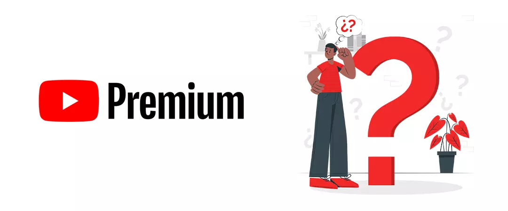
This platform has long been the king of free video distribution & publication, but some content is expensive to host and stream because of creators demanding money for unique & exclusive content. If viewers keep blocking ads, YT has no option other than to pursue substitute revenue replicas- YouTube Premium.
“YouTube Premium is a paid membership offered by Google to helps consumers get a better experience via satisfaction provided by continuous/uninterrupted viewing on YouTube & other YouTube apps, via no advertisement implementation mechanism.”
It is an opportunity/prospect to indulge in your compulsion, enthusiasm & addiction! Now, after understanding what YT premium service is basically, let us know its significance.
Evolution of YouTube Premium
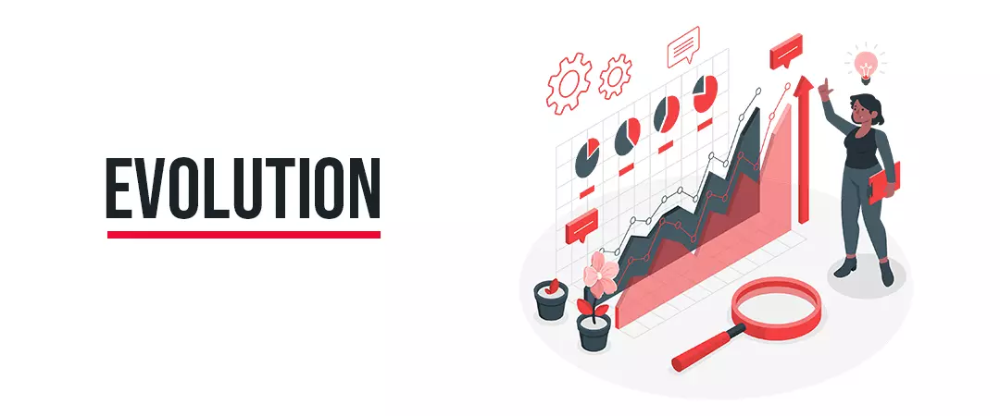
The service was formerly launched on November 14, 2014, as Music Key, delivering only advertisement-free streaming of music videos from contributing labels on YT and Google Play Music. The service was then swotted and reintroduced as YouTube Red on October 31, 2015, intensifying its reach to offer advertisement-free access to all videos, as divergent to only music. YT proclaimed the rebranding of the service again as YouTube Premium on May 17, 2018, together with the reoccurrence of a distinct, YT Music subscription service. It legitimately took effect on June 18.
This rebranded service syndicates a variety of features for the perfect YT binge, thrilling the users to optimally enjoy the service, whether it’s downloading videos for a flight, splurging infamous online shows/seasons, or listening to the wide breadth of ad-free music. As a fragment of enduring enhancements to the member experience, YT Premium delivers direct economic outcomes to its members.
So, let’s get started!
Why use this premium YouTube service?
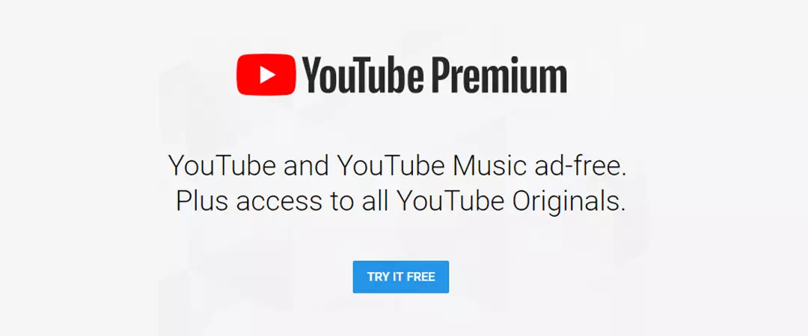
The fundamental ingredients of YT Premium Service offer-
Ad-free playback
- Repetitive advertisement across the platform may lead to a humiliating user experience for an enthusiastic creator for whom half-minute intermezzos can really add up.
- In fact, this is the biggest focused selling advantage. You can view the whole shebang on the site without any ads.
- You also get an ad-free viewing experience on any platform you sign in to with your Google account, counting the web, androids, Roku, or any other streaming devices. Hence, the pervasiveness of ad-blocking is one of the driving forces behind YT Premium.
You might be interested in reading: YouTube Ads
Video downloads
- Downloading is among the few perks unambiguously associated with watching on androids. This feature allows a member to download videos to their iPhone or Android phone for offline viewing. It is special, as for watching videos on the go if you have a limited data plan, or to enjoy your content in poor or no connection, like in an airplane.
- Stocking videos to your gallery allows you to minimize data usage when you’re out, which can successfully aid to reduce your phone bill.
- It is a feature comparable to how we leverage Netflix or Spotify subscription.
- You can even download whole playlists to enjoy offline on your smartphone or tablet.
Background play
- Being another incredible feature ‘background play’ supports your video and its complementary audio remain to play while you use your phone or not, or open other App over it.
- It helps preserve the device’s charging and permits you to get more out of your experience, knowledge, and safari.
- Consenting the application to be activated in the background can also save data as streaming audio is far less rigorous than streaming video.
Keep scrolling to know more, YouTube Premium benefits…
YouTube Music Premium
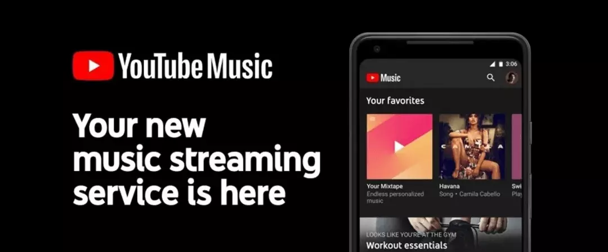
- The premium gives the authorization to access, YT Music Premium. YT Music Premium is apparently Google’s riposte to Spotify and Apple Music. Together with the videos of artists, you’ll also get access to associated music audio.
- Leveraging this feature, you can, create and share playlists, create stations, discover new releases, download music like on other musical Apps and make submissions grounded on your personalized interest. For music paramours, this is one of the best features of the membership. YT Music, like Apple Music, Spotify, or Pandora, allows you to stream an extensive library of music.
- If you let YT Music, detect your location, it will play location explicit music for you (like a workout playlist at the gym). This is moreover super functionality, contingent on your perspective.
- You will be pleased by the diversity of genre and artists in the list, and then YT premium will be worth for YT music alone!
- If YouTube Music doesn't recognize the song you're searching for, the app can even find that song for you from the app!
YouTube Originals
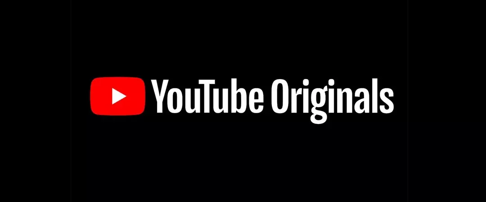
- This platform’s Premium service permits you to watch exclusive shows produced by the streaming service and YT Music.
- The original content you can leverage with YT Premium comprises scripted, certainty, documentary, and animated programming, in addition to exclusive content highlighting influencers-famous personalities.
- You get access to unique content, principally from prominent creators, sideways many popular tv shows, biographies, and movies.
- You can even see original series produced in collaboration with professional studios and YT personalities, under the banner YouTube Originals. For multi-episode series, the starting episode of a YT Originals series is available. Also, the platform vaguely states that "only select episodes may be available for streaming at a given time," but in our experience, most of the originals content is open to all.
- You also get access to additional content like deleted scenes/unedited films and director's cuts.
How to sign up for YouTube Premium?
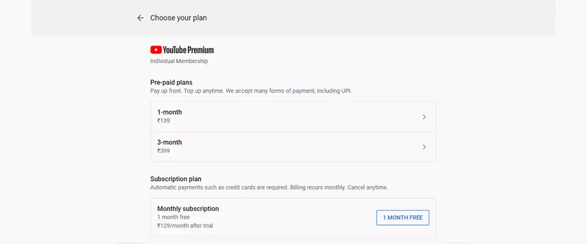
To sign up for YT Premium, just click on one of the many pop-up boxes for a free trial on your desktop or your android phone.
Click on “Try It Free” when a Premium pop-up appears.
Otherwise, follow these steps:
- Step 1- From your Google account Log in to YT.
- Step 2- Click on your Avatar (Profile photo).
- Step 3- From the dialogue box that appears, choose Paid memberships.
- Step 4- Select YouTube Premium in the next screen. Select a payment method while the first month is free. You can cancel before your month is over and you won't get charged.
Or just visit, youtube.com/premium.sign into the Google account you’d like to start your membership on.
YouTube Premium subscription fees
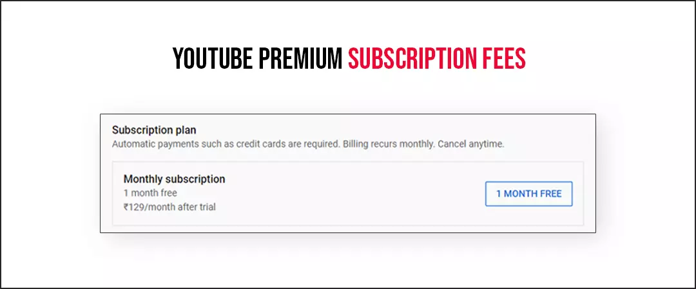
The subscription structure is like those like Spotify and Apple Music, a one-time fee cracks everything without omissions. Other reoccurring subscription services like Netflix or Binge have tiered payment models were paying extra charges lets you unlock advanced definition content or supplementary screens to a routine at the same time. A Premium subscription costs $14.99 per month, although if you’re signing up through an iOS device, you need to pay a subscription fee of up to $19.99.
YouTube premium plans
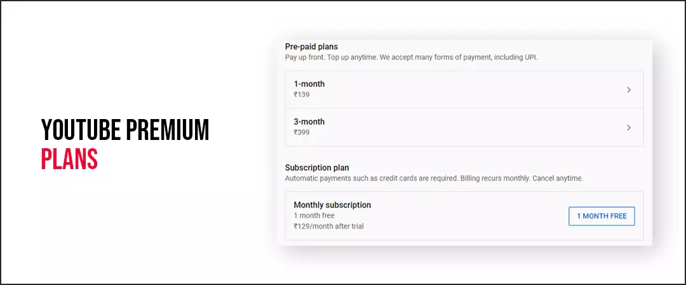
YouTube premium family membership comes for $22.99 per month and allows up to five family members to operate under one account. All you need to do is, register your family members and have proof that you live at the same address. Student subscriptions cost $8.99 per month and necessitate annual verification to validate you’re still studying. To verify your student status, you’ll need to submit a copy of your student ID, record, or another school-issued document that represents identity.
Cost-effectiveness
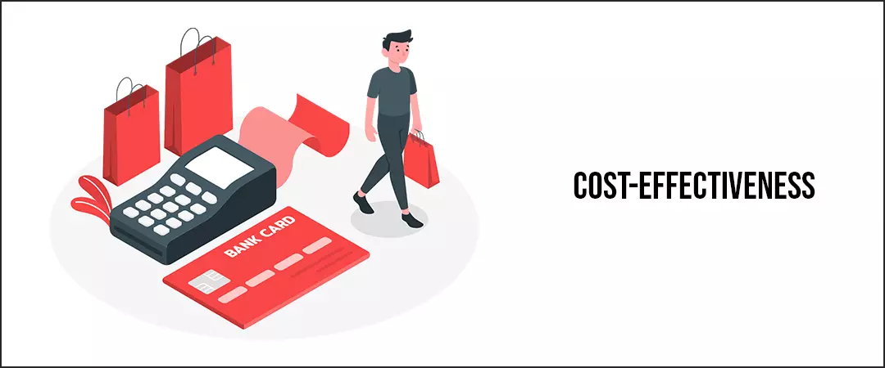
Whether the cost is worth it or not, hinge on how many of Premium's reimbursements you leverage.
YouTube premium cost India
For an individual user, YouTube Premium cost in India comes with a subscription at ₹129 per month. Nonetheless, YT offers a student plan at ₹79 per month. Though, the user will have to verify their student account annually. YT also offers; YouTube premium free trial of 30 days with the paid plans.
It also provides YT premium family, a plan which is priced at ₹189 a month and can be retrieved by five different members of a joint family. The account holder, or family head, will have to create a Google family group. The head can then invite family members to the group to access YT Premium, YT Music Premium, or YT TV membership along. Each member’s viewing and listening preferences are all according to the user’s own personalized search history. However, the personal library, subscriptions, and recommendations will stay alike. These predilections won't be shared across crossways accounts.
Is YouTube premium worth it for creators?
Extra way for them to make money
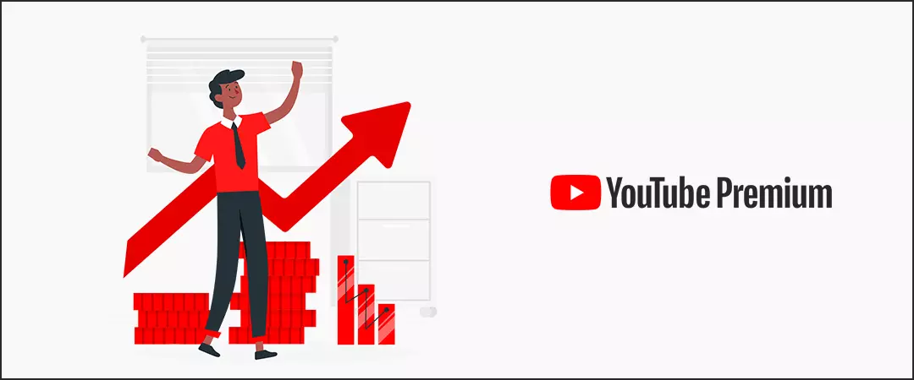
It is another great opportunity that comes along that is revenue sharing. A Premium subscription supports the Creators you appreciate or follow. This apparently embraces demonetized videos too. Premium lets you help the business and support the creators you watch. YT elucidates that it splits the money received from Premium subscriptions among the channels that those people watch. Therefore, by watching your favourite channels with Premium, you are helping creators in earning money that would else have to depend on ads for. The platform distributes this money to creators based on how much Watch Time they receive from Premium subscribers. Thus, the more the subscribers, the more the earning. For example, if one channel receives higher Watch Time than another, it gets a larger piece of cake (money). Many creators even buy real active subscribers to expand their audience.
YouTube receipts/caters a 45% share of a creator’s Premium earnings, like for ad-generated income.
You might be interested in reading: How to increase watch time on YouTube videos in 2021.
The super chat feature
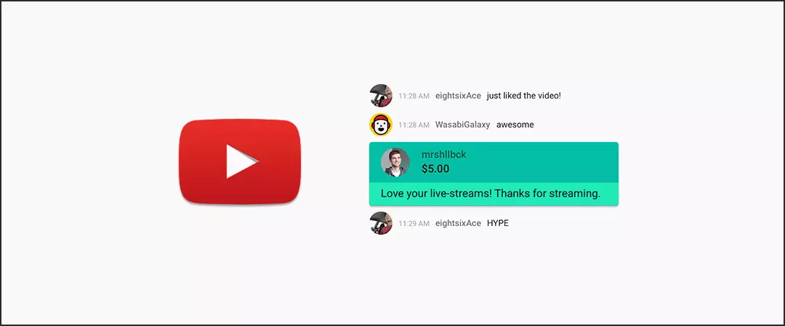
YT is running a beta test for Premium, in which subscribers can send free money to their favourite creators. To run the mechanism, YT is adding $2 worth of Super Chat credits to Premium accounts, every month. Leveraging those funds, the audience can send contributions or donations to video creators during live streams. If this feature becomes successful, it will definitely become a success stream for creators.
You might be interested in reading: How you can make money and YouTube Channel Monetization 2021.
Now let us answer some important related questions
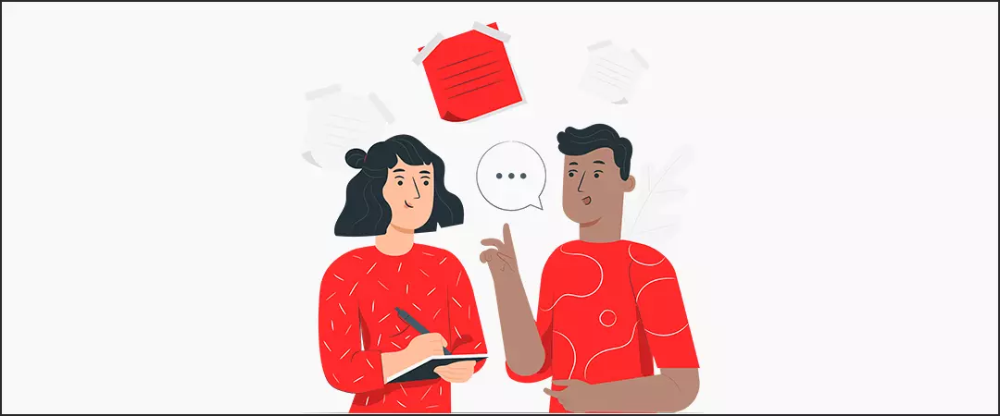
Q.1 Will features like comments, likes and views be available with YouTube Premium?
Ans. Definitely, these features are an essential part of YT underlining performance metric-Engagement & Experience. Therefore, they'll work likewise, how they do with ad-supported viewing.
Q.2 Do YouTube premium views count?
Ans. Yes, they do. And watch time for downloaded videos is also documented and incorporated.
Q.3 Does YouTube premium hurt YouTubers?
Ans. No, when a user views a video on Premium, he/she doesn’t see an ad. But YT pays them directly instead, approximately equivalent to what they'd get for an advert view. In fact, a Premium view may essentially be worth somewhat more than an ad view.
Conclusion: - Leveraging YouTube Premium, you can:
- Watch plenty of videos on YT without ads.
- Download videos or even playlists on your android to watch offline.
- Uninterruptedly play videos on your mobile device while opening other apps.
- Get access to view all Original series, seasons, and movies.
- Ad-free viewing on YT Kids.
- Access a free subscription to YT Music Premium.
- Listen to your favourite music on your Google Home or Chromecast Audio.
All YT Enthusiasts must leverage it from watching videos ad-free, listening to free music, accessing YouTube kids to earn money! I hope you found this ultimate guide on YouTube Premium helpful.
Feel free to share!